龍騰學測字彙王：suggestion / suggest · PDF viewer p.220
點下面原書頁大圖會開切頁包；需要全書時點完整 PDF。
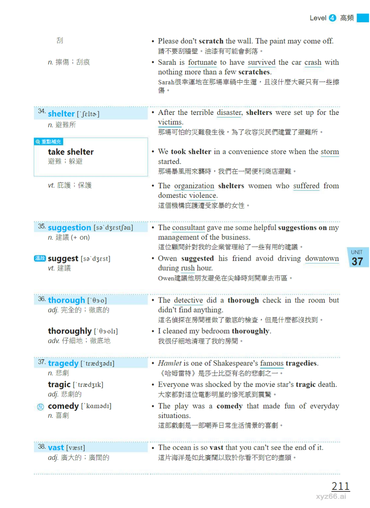
最基本的「提出建議」路線。適合學生先掌握 suggestion/suggest，而不是一開始就背太花的 idiom。
搜尋 cue：suggestion / suggest
原書定位：p.220
右側原頁 p.220suggestion/suggest p.219-221完整原書 PDF
點下面原書頁大圖會開切頁包；需要全書時點完整 PDF。

input 很適合「提供意見、參與決策」；比 suggestion 更像會議裡有被納入討論的貢獻。
搜尋 cue：input into a decision
原書定位：p.256
右側原頁 p.256input p.255-257完整原書 PDF
點下面原書頁大圖會開切頁包；需要全書時點完整 PDF。
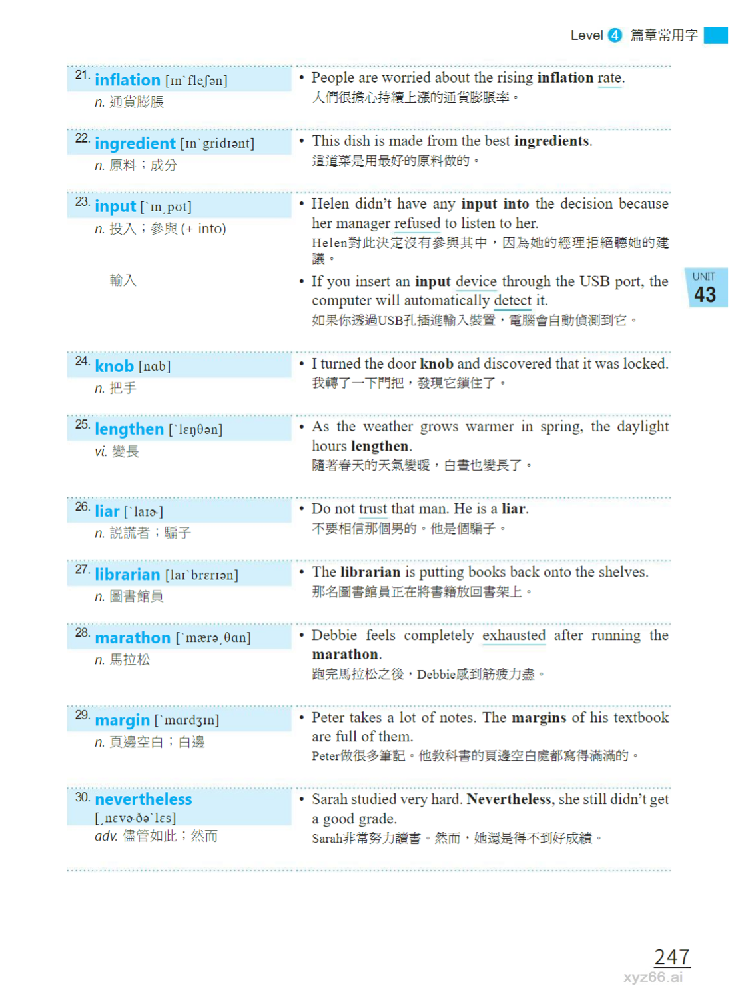
這條很貼近「我只是提供一個建議而已」；語氣比直接 tell someone what to do 柔和。
搜尋 cue：I merely offered a suggestion.
原書定位：p.190
右側原頁 p.190offer a suggestion p.188-191完整原書 PDF
點下面原書頁大圖會開切頁包；需要全書時點完整 PDF。
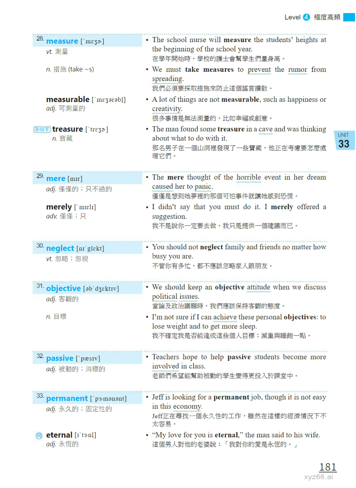
不是「我提供拙見」，而是「你的建議讓人值得想一想」。很適合回應別人的想法。
搜尋 cue：give someone food for thought
原書定位：p.19, p.20
右側原頁 p.19右側原頁 p.20food for thought p.18-20完整原書 PDF
點下面原書頁大圖會開切頁包；需要全書時點完整 PDF。
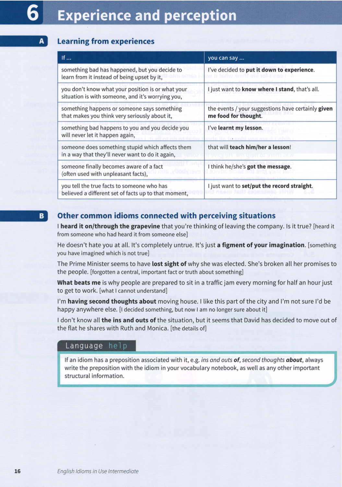
點下面原書頁大圖會開切頁包；需要全書時點完整 PDF。
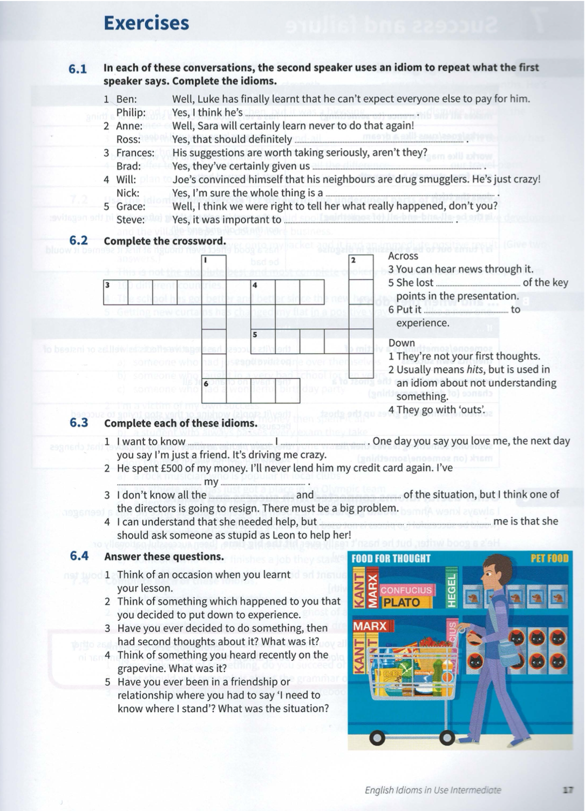
最適合補「意見」的 collocation：share an opinion、appreciate someone’s point of view、state an opinion。
搜尋 cue：share an opinion / appreciate someone’s point of view / state an opinion
原書定位：p.118, p.119, p.120, p.121
右側原頁 p.118右側原頁 p.119右側原頁 p.120右側原頁 p.121opinions p.118-121完整原書 PDF
點下面原書頁大圖會開切頁包；需要全書時點完整 PDF。
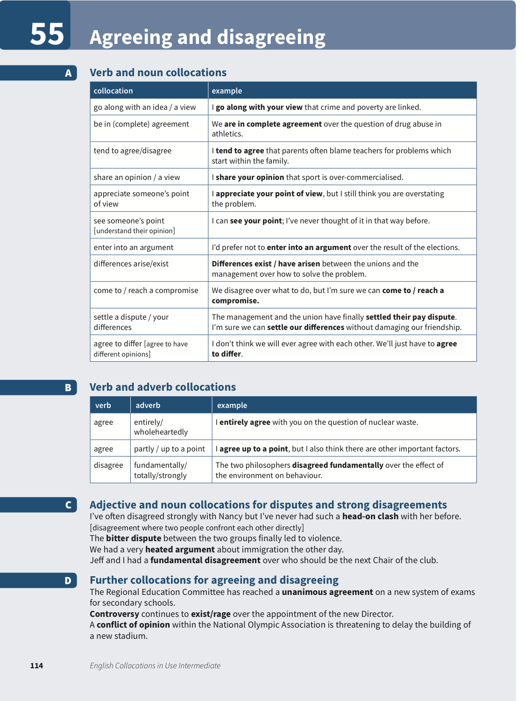
點下面原書頁大圖會開切頁包；需要全書時點完整 PDF。
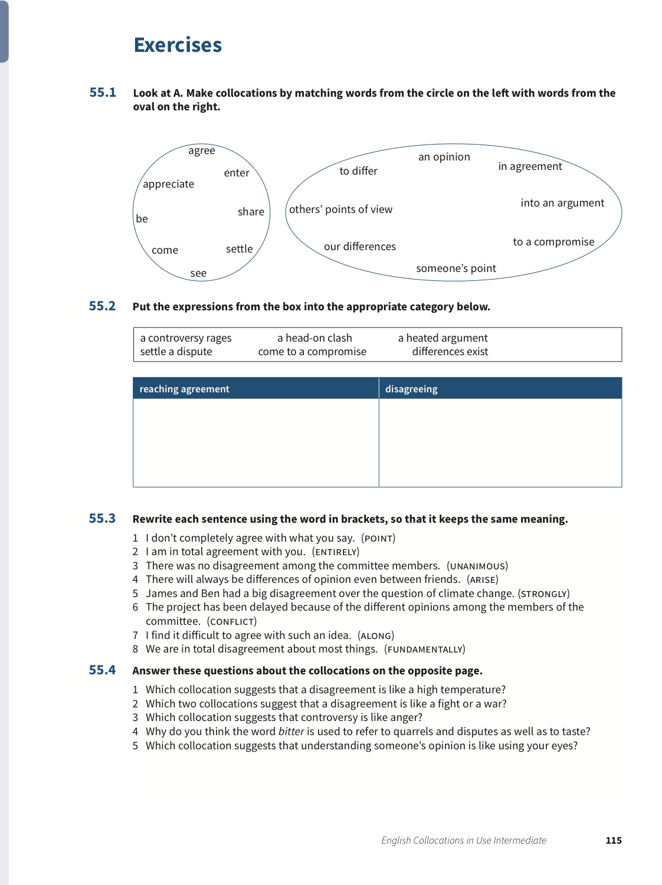
點下面原書頁大圖會開切頁包；需要全書時點完整 PDF。
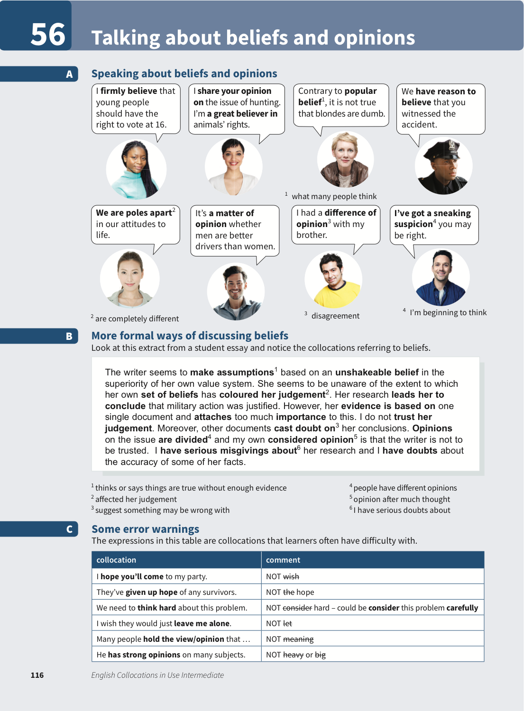
點下面原書頁大圖會開切頁包；需要全書時點完整 PDF。
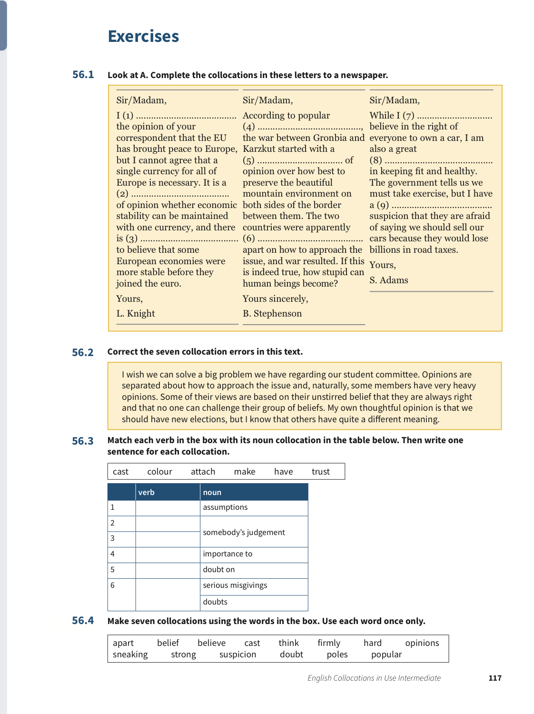
put forward 比 suggest 更正式，像把一個論點、想法、方案拿到桌面上。
搜尋 cue：put forward an argument / theory / proposal
原書定位：p.124, p.125
右側原頁 p.124右側原頁 p.125claims/suggestions p.124-125完整原書 PDF
點下面原書頁大圖會開切頁包；需要全書時點完整 PDF。
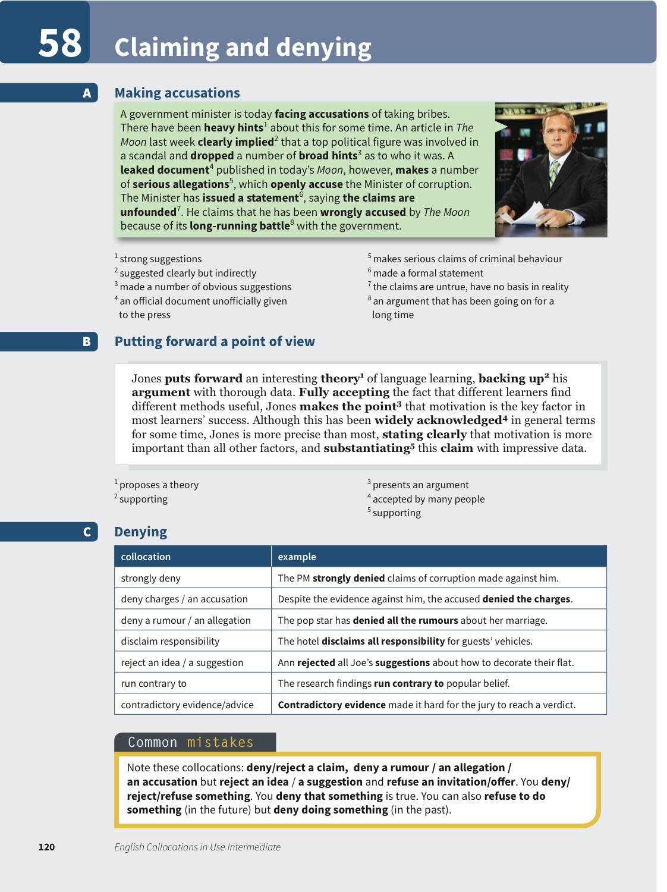
點下面原書頁大圖會開切頁包；需要全書時點完整 PDF。
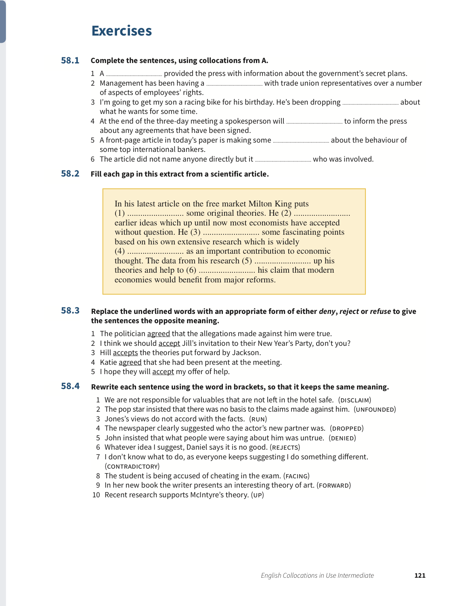